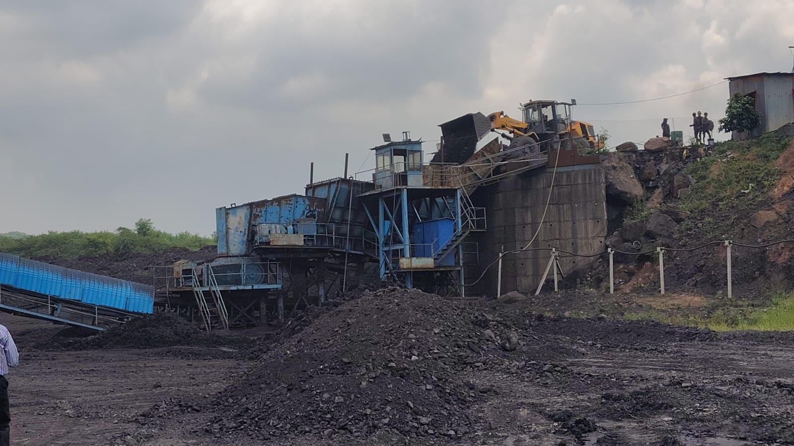
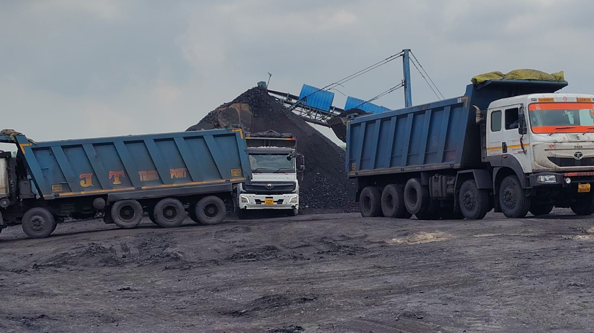
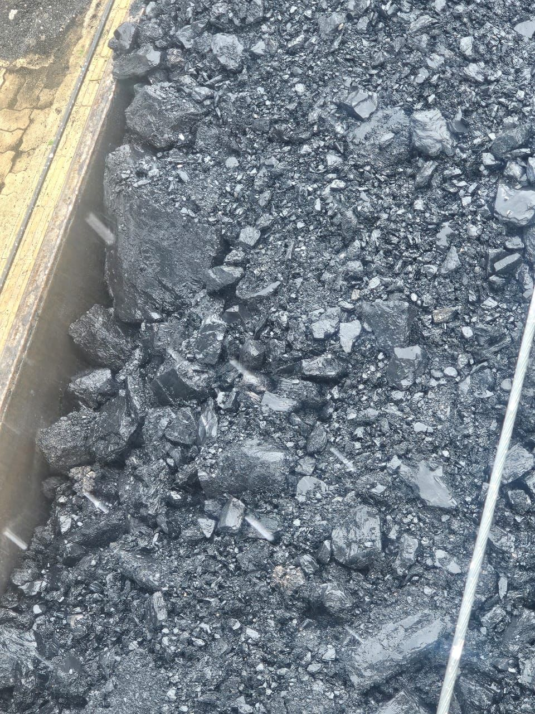
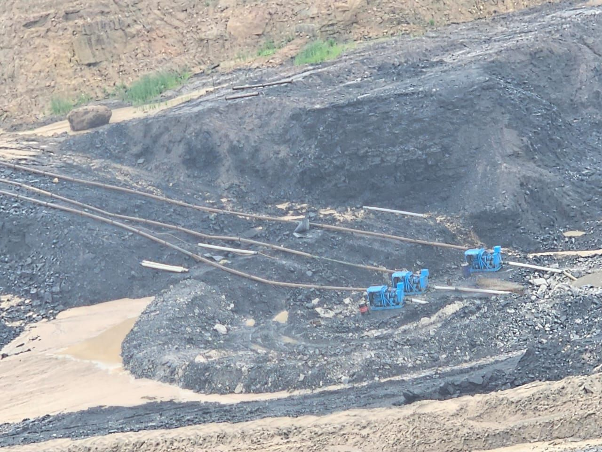

Conveyor Feasibility & Mine Infrastructure for a Coal Mining Group
A large coal mining group needed to move from truck-based haulage to enclosed conveyor transport – but faced three potential routes, each with different capex, environmental approvals, and risk profiles. The board needed a decision grounded in rigorous feasibility, not internal estimates.
The Situation
A ₹800 Cr infrastructure decision that couldn't afford to be wrong.
A major Indian coal mining group had been operating truck-based haulage across its mines for decades. Rising fuel costs, growing community opposition to heavy truck traffic, and new environmental compliance requirements made the shift to an enclosed conveyor system both operationally necessary and strategically urgent.
The complexity was significant: three potential routes existed, each with different topography, land acquisition requirements, environmental sensitivities, and capex profiles. Internal engineering estimates varied widely, regulatory approvals were unclear, and vendor selection had not been approached systematically.
GreyRadius was engaged to conduct a full feasibility study – covering route assessment, capex modelling, regulatory pathway mapping, and vendor evaluation – to give the board a defensible basis for a decision on what would be one of the largest infrastructure investments in the group's history.
Engagement at a glance
Client
Large Indian coal mining group
Service
Feasibility & TEV · Opportunity Assessment
Capex scope
₹800 Cr enclosed conveyor system
Deliverables
Route analysis, capex model, vendor shortlist, regulatory map
Three routes. Three regulatory ministries. One wrong choice with no good way back.
Route uncertainty
Each of the three candidate routes had materially different land acquisition requirements, geological challenges, and proximity to ecologically sensitive zones. Internal engineering teams had assessed routes independently without a standardised comparison framework – making it impossible to compare them objectively.
Multi-ministry regulatory complexity
Enclosed conveyor systems in Indian coal mining require simultaneous clearances from the Ministry of Environment (EC), Ministry of Coal, and in many cases the Ministry of Forests (FC). Projects that don't sequence these in parallel routinely add 12–18 months to timelines and face cost overruns before the first belt is installed.
Vendor selection without a framework
The market for large enclosed conveyor systems in India is served by a mix of international OEMs, Indian manufacturers, and EPC contractors. Without structured evaluation criteria across technical capability, delivery track record, after-sales service, and financial stability, vendor selection was being driven by relationships rather than merit.
Systematic route comparison. Rigorous capex modelling. Regulatory pathway sequenced from day one.
Route assessment framework
Developed a standardised evaluation framework and assessed all three routes against it – covering topography and civil work requirements, land acquisition complexity, proximity to forest land and water bodies, community impact, and integration with existing mine infrastructure. Identified a third route that internal teams had partially assessed but not fully costed – which ultimately emerged as the preferred recommendation.
Capex modelling & financial analysis
Built detailed capex models for each route, covering civil infrastructure, conveyor system procurement, installation, commissioning, and contingency provisions. Modelled operating cost savings versus continued truck haulage across 5, 10, and 20-year horizons. Produced a route-by-route NPV comparison that gave the board a direct financial basis for the decision.
Regulatory pathway mapping
Mapped the full regulatory approval sequence for the preferred route – EC, FC, and mining ministry clearances – with realistic timelines, submission requirements, and parallel-processing opportunities. Identified where the project could front-load documentation to reduce total approval time by an estimated 6–8 months versus a sequential approach.
Vendor evaluation & shortlisting
Evaluated the vendor market across 8 candidates – international OEMs, Indian manufacturers, and EPC contractors – against a structured scorecard covering technical capability, reference projects, delivery track record, warranty and after-sales terms, and financial stability. Shortlisted 2 preferred vendors with detailed negotiation guidance for each.
"Infrastructure decisions of this scale don't forgive errors. The feasibility rigour GreyRadius brought – from geological surveys to regulatory compliance – made the board's decision straightforward."
Preferred route identified. ₹800 Cr capex modelled. Regulatory pathway mapped. Vendors shortlisted.
Routes evaluated
3 routes assessed
Including one route not previously fully costed – which became the preferred recommendation with lowest capex
Capex modelled
₹800 Cr
Full financial model with route-by-route NPV comparison and 20-year operating cost analysis
Regulatory
Full pathway mapped
EC, FC, and mining ministry clearances sequenced for parallel processing – estimated 6–8 months faster
Vendors
2 preferred shortlisted
From 8 evaluated across technical capability, track record, and financial stability
Key outputs from this engagement
Full assessment for each of the three routes – civil requirements, land acquisition risk, environmental sensitivity, and capex estimate – in a standardised comparison format.
Detailed capex model by route with operating cost comparison, NPV analysis at multiple discount rates, and sensitivity analysis on key assumptions.
Clearance requirements, submission sequences, realistic timelines, and parallel-processing opportunities across all three required ministries.
Scorecards for all 8 evaluated vendors, detailed profiles on 2 preferred candidates, and negotiation guidance aligned to the recommended route.
From the engagement




We had internal estimates for the conveyor routes, but GreyRadius found a third route we hadn't considered – one that cut projected capex by 18%. That alone justified the engagement.
"Enclosed conveyor systems in Indian mining require simultaneous clearance from environment, forest, and mining ministries. Projects that don't map all three in parallel routinely add 12–18 months to timelines and face cost overruns before the first belt is installed."
Running a large infrastructure or capex feasibility study?
We bring the same rigour to industrial infrastructure decisions that investment banks bring to M&A – primary research, financial modelling, and regulatory mapping in one integrated engagement.